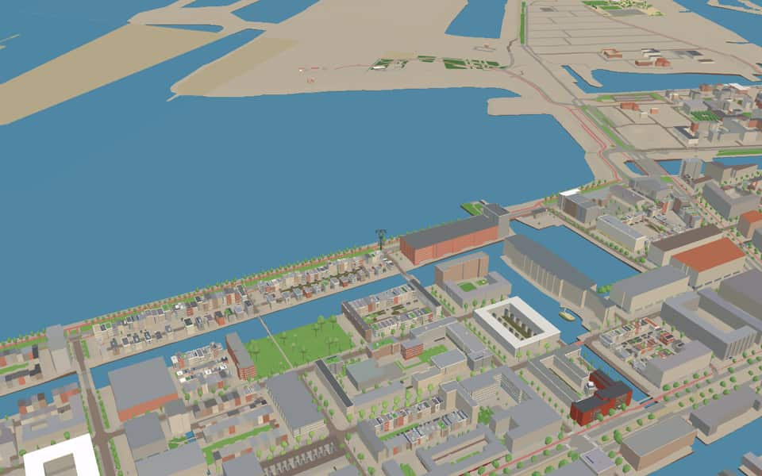
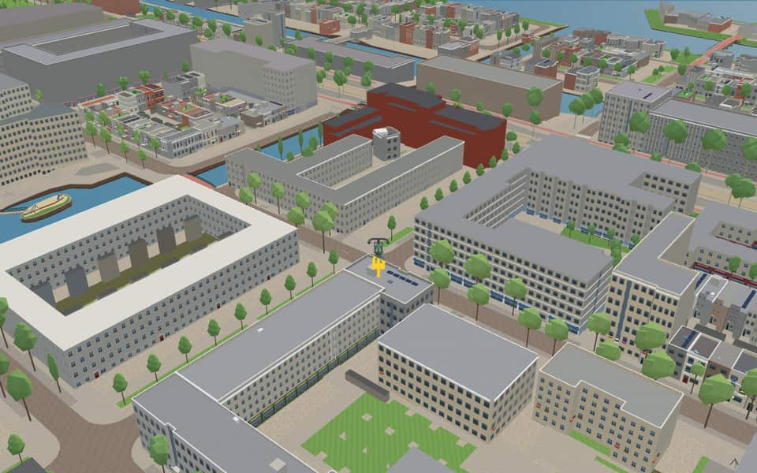
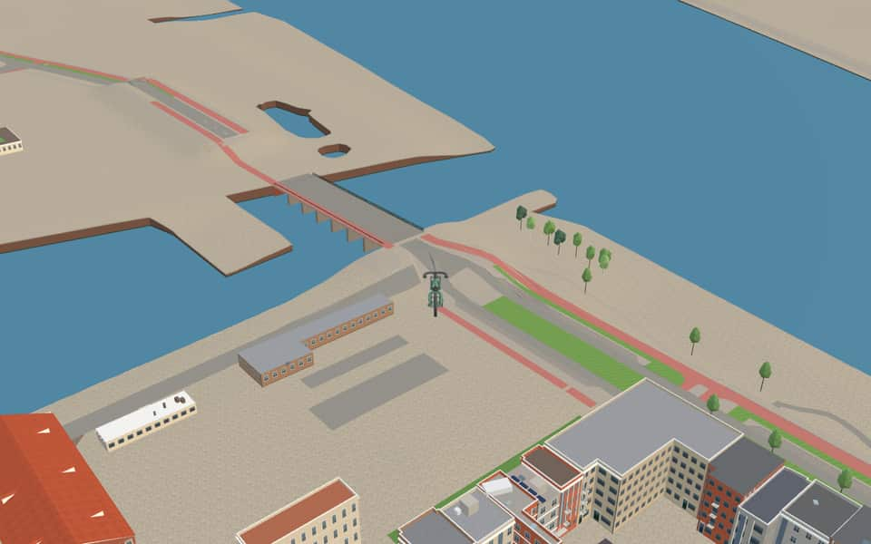

Quarter · Amsterdam
IJburg
IJburg is a residential area on an archipelago of artificial islands in the IJmeer, in the Oost borough. The city counts six main islands or island groups: Steigereiland, Haveneiland, the three Rieteilanden, Centrumeiland, Strandeiland and Buiteneiland. The first phase, Steigereiland, Haveneiland and the Rieteilanden, is largely complete. nl.wikipedia.org
The name. The name follows older Amsterdam islands such as Kattenburg, Wittenburg, Oostenburg, Sporenburg and Zeeburg. nl.wikipedia.org


In the game
Frames from a ride through IJburg.



6 more photos of IJburg


.jpg){kind=link}

.jpg){kind=link}


Built here
Buildings modelled one by one for the ride.
Politiepost IJburg, IJburglaan 1397, Amsterdam (2004; ground-floor police post in a red-brick housing block, one pand)
Did you know
Trivia the ride can show you here.
- Nicholas Grimshaw's bridge to IJburg (2000), with two 75-metre spans, is one of the biggest bridges in Amsterdam. Wikipedia
- The Nescio Bridge to IJburg, named after the writer Nescio, was designed by Jim Eyre. Wikipedia (translated from Dutch)
- All six bridges over the Groene Tunnel canal were designed by architect Jeroen van Schooten. Wikipedia (translated from Dutch)
- Thirteen mature plane trees in the Theo van Goghpark were moved from the Europaplein to make way for the North-South metro line. Wikipedia (translated from Dutch)
- The Betonsluis got its nickname from its concrete lock gates, a first in the Netherlands. Wikipedia (translated from Dutch)
- Theo van GoghparkThirteen plane trees were transplanted here after being removed from Europaplein for subway construction. nl.wikipedia.org
- Theo van GoghparkStreets surrounding the park are named after film figures like Emmy Andriesse and Eva Besnyö. nl.wikipedia.org
- Gerda TarobrugAmsterdam named the structure after war photographer Gerda Taro one month before construction started. nl.wikipedia.org
- Kors van BennekombrugArchitect Jeroen van Schooten designed this bridge as part of a series called the Green Tunnel. nl.wikipedia.org
- Lee MillerbrugGuardrails include dedicated spaces for bird nests and bats to support local wildlife. nl.wikipedia.org
- Margaret Bourke-WhitebrugThe canal was a dead end with a dam until excavation finished in September 2021. nl.wikipedia.org
- BetonsluisThe flat bridge is firmly mounted on both lock sides, blocking high boats from passing underneath. nl.wikipedia.org
- Groene TunnelConstruction of the first bridge on this route was completed in 2003. nl.wikipedia.org
- IJmeerA straight line from Uitdam to Almere-Pampus marks its northeastern border. en.wikipedia.org
3 more facts
- IJmeerThe Hollandse Brug connects the IJmeer to the Gooimeer in the southeast. en.wikipedia.org
- IJburglaanA crab skeleton inspired the bridge's segmented appearance. en.wikipedia.org
- IJburglaanIJburglaan derives its name directly from the IJburg district built on seven artificial islands in the IJmeer. en.wikipedia.org
Names on the map
Where the canal, bridge and street names come from.
Canals and water
- HaveneilandschutsluisNamed after the adjoining inner harbour, which is connected to the IJmeer by a lock.
- HollandiagrachtThe first Dutch film company to produce and distribute films and documentaries on a regular basis. The Hollandia film factory was founded in 1912 and expanded with a theatre company in 1913. It went bankrupt in 1922.
- IJmeerThe IJmeer is a border lake in the Netherlands. It lies between the De Nes polder, Pampushaven, the Hollandse Brug and the mouth of the IJ at IJburg, divided between the provinces of Noord-Holland and Flevoland.
- MerdekagrachtMerdeka means free or independent. Already in colonial times it was the forbidden rallying cry of the nationalist movement, and after the proclamation of the Republic of Indonesia on 17 August 1945 it became the characteristic battle cry of the independence fighters.
- PolygoongrachtA film company founded in Haarlem in 1919, which produced commissioned films, documentaries and weekly cinema newsreels.
- ProfiltigrachtA film company founded in The Hague in 1929, producer of (commissioned) films, documentaries and cinema newsreels, first the rival and later the partner of Polygoon.
5 other canals without a recorded story
Betonsluis · Groene Tunnel · Het Oog · Nijlpaardsluis · Wim Noordhoekgracht
Bridges
- Annemie WolffbrugThe photographer Anna Maria Koller was known as Annemie Wolff and also used the pseudonym Marianne (Germany, 27 December 1906 - Amsterdam, 2 February 1994). In Munich she married the architect and photographer Helmuth Egon Wilhelm Wolff (1895-1940). In May 1933 they fled to Amsterdam, because as a Jew Helmuth could no longer work in Germany and a warrant had been issued for his arrest on false grounds. On the night of 14 to 15 May 1940, Annemie and Helmuth tried to take their own lives. They were found and taken to the Nederlands Israëlitisch Ziekenhuis, where Helmuth died. As a young widow of 35, Annemie had to get her life back on track.Bridge 2060: a reinforced concrete bridge for road traffic, dated 2007 in the city's bridge register.
- Gerda TarobrugGerda Taro (1910-1937) was the first woman photographer at the front. She fought against Nazism, and her passion has made her a symbol of anti-fascism.
- Hein de HaanbrugBridge 2037: a reinforced concrete bridge for cyclists, dated 2002 in the city's bridge register.
- Kors van BennekombrugKors van Bennekom (Lodewijk, 13 July 1933 - Amsterdam, 4 October 2016) was an Amsterdam photographer and holder of the City of Amsterdam's Frans Banninck Cocq medal.Bridge 2009: a reinforced concrete bridge for road traffic, dated 2002 in the city's bridge register.
- Lee MillerbrugLee Miller (1907-1977) was an American photographer and model, known as a war correspondent in the Second World War. She went on to become a renowned fashion and art photographer.
- Margaret Bourke-WhitebrugMargaret Bourke-White (1904-1971) was the first war correspondent accredited to the US Army and a photographer for the US Air Force.Bridge 2030: a reinforced concrete bridge for road traffic.
Streets
- Ad WindighofImportant photojournalist (1912-1996). During the Second World War he belonged to the group of photographers later known as 'De Ondergedoken Camera' (The Hidden Camera), which clandestinely documented the resistance and the Hunger Winter. After the war he was a co-founder of the photographers' association GKf.
- Adriaan DitvoorsthofFilm director (1940-1987). With his dark, bizarre and lyrical films and his new ideas about film grammar and camerawork, he became the figurehead of Dutch experimental avant-garde cinema.
- Adriënne SolserhofVariety artiste (1873-1943) from the Jordaan who enjoyed great success in theatre and cinema in the 1920s.
- Alexandrine TinnehofAlexandrine Pieternella Francoise Tinne (1835-1869), traveller and pioneer of photography. Together with her mother and aunt she travelled through North Africa, visiting places that were not yet on the map. In 1860-'61 she took photographs of her birthplace, Den Haag.
- Allen GinsbergstraatIrwin Allen Ginsberg (1926-1997) was a Jewish American poet.
- Annie BoshofActress (1886-1975). In the 1910s she played many roles, often the lead, in films made by Hollandia, the film company of the director Maurits Binger. She belonged to the permanent core group of actors around Maurits Binger and was a true film diva in her day.
- BarkasstraatA barkas (launch) was originally the largest boat carried aboard a warship. Today a barkas is a popular, rugged motor boat with an open cockpit.
- BarkentijnkadeA barkentijn (barquentine) is a ship that is a cross between a schooner, a barque and a brig. It is also called a barkschoener or schoenerbark.
- BeemdgrasstraatBeemdgras (meadow-grass) is a native plant genus of about five hundred species in the grass family.
- Ben van MeerendonkstraatBen van Meerendonk (1913-2008) was a Dutch photojournalist.
- Bert HaanstrakadeFilm director (1916-1997) who became famous for films such as 'Fanfare', 'Zoo', 'Alleman' and 'Bij de beesten af', in which he took a witty look at Dutch society. He received 78 awards for his films and documentaries, including an Oscar for his 1958 documentary 'Glas' (Glass).
- BoeierstraatA boeier is a boat, a small flat-bottomed vessel, used mainly by the well-to-do middle classes for comfortable business journeys.
140 more streets with a story
- Brand Dirk OchseparkBrand Dirk Ochse (1892-1958), director of the Haarlem film company Polygoon, which became famous for its cinema newsreel.
- BrigantijnkadeA two-masted sailing ship, also called a schooner brig.
- Camille BalystraatCamille E. Baly (Sint Maarten, 1936 - Sint Maarten, 2012) was a poet, writer and performer of spoken word. His work drew heavily on the oral history of the Windward Islands of the former Netherlands Antilles. He wrote mainly in English but also performed in Dutch. For many years he headed the island of Sint Maarten's office of Culture and Education.
- Cas OorthuyskadePhotographer (1908-1975). In the early 1930s he joined the Association of Worker Photographers. During the Second World War he belonged to the group of photographers later known as De Ondergedoken Camera (the hidden camera). He photographed the Hunger Winter of 1944. Long after the liberation, social engagement remained central to Oorthuys's photography.
- Cola DebrotstraatCola Debrot (Bonaire, 1902 - Amsterdam, 1981) left for the Netherlands at fourteen to study. He studied law in Utrecht for a time, but left for Paris in 1928. From 1931 he studied medicine in the Netherlands, and in 1942 he set up as a doctor in Amsterdam. While a student he made his debut with a long novella, Mijn zuster de negerin (1935), and in 1940 he co-founded the magazine Criterium. In 1948 Debrot returned to the Antilles and settled in Willemstad, where he was active in cultural life, especially for the Cultureel Centrum Curaçao. In 1952 he became Minister Plenipotentiary of the Netherlands Antilles, and in 1962 governor.
- Cornelis ZillesenlaanTax collector (1736-1828) and member of the Hollandsche Maatschappij der Wetenschappen (Holland Society of Sciences). He made two inventions meant to improve the means of measuring a ship's speed. The intended improvements were not achieved, however.
- DaguerrestraatLouis-Jacques Mandé Daguerre (1787-1851), French photographer. In 1837 he invented the daguerreotype, named after him, a method (a photographic image on a silvered plate) by which photographs could be developed on a large scale, making him one of the founders of photography.
- DennenhofA conifer (the pine). The native Scots pine is by far the most common species in the Netherlands.
- DiemerparklaanNamed after the village of Diemen. The park is managed ecologically and links the nature areas on the south and north sides of the IJmeer.
- DiponegorostraatDiponegoro (Yogyakarta 1785 - Makassar 1855). The aristocrat Diponegoro, a 'prince' of a Javanese principality, led the Javanese uprising against Dutch colonial rule in the Java War (1825-1830). Dutch authority wavered, but won in the end. The fighting may have cost more than 200,000 lives. Diponegoro was exiled to Celebes. He is one of Indonesia's greatest 'national heroes'.
- DoggerstraatA ship that takes its name from the place where it went fishing, the Dogger Bank. The dogger fished for herring and cod, among other things.
- Doris LessingstraatDoris Lessing (1919-2013) was a British writer.
- Duarte PachecostraatPortuguese navigator (died 1533), a contemporary of Columbus and Bartolomeu Dias. In 1488 he joined Dias on the island of Príncipe in the Atlantic Ocean, as Dias was returning from exploring the route to India around the Cape.
- Edmond HalleylaanEnglish astronomer (1656-1742), Fellow of the Royal Society, appointed 'Astronomer Royal' in 1731. He wrote on magnetism and published a chart of the Atlantic Ocean and a world map on which he improved the courses. A comet and an observatory are named after him.
- Edmond HalleysteigerEnglish astronomer (1656-1742), Fellow of the Royal Society, appointed 'Astronomer Royal' in 1731. He wrote on magnetism and published a chart of the Atlantic Ocean and a world map on which he improved the courses. A comet and an observatory are named after him.
- Edmund GunterstraatEnglish astronomer (1581-1626), inventor of the pleinschaal (Gunter's scale), a kind of slide rule with logarithmic divisions. His scientific work dealt with navigation and its problems.
- Edward MasseystraatEnglish scientist who in 1802 developed the mechanical log, a device that shows a ship's speed. Between 1802 and 1848 he received six patents for various mechanical nautical instruments.
- Edward WrightstraatEnglish scholar (died 1615) whose findings were particularly important for navigation. In 1599 he published 'Certaine errors in navigation'.
- EgelskopstraatA marsh plant (bur-reed) that grows well in small ponds.
- Emmy AndriessestraatPhotographer (1914-1953). During the Second World War she joined a group of photographers later known as 'De Ondergedoken Camera' (the hidden camera) and made a photo report of the Hunger Winter in Amsterdam. After the war she concentrated mainly on portrait photography.
- Erich SalomonstraatGerman-Jewish photojournalist (1886-1944), a pioneer of candid photography, in which people are photographed without their noticing. A grand master of political documentary and society photography.
- Eva BesnyöstraatHungarian-Dutch photographer (1910-2003), born in Budapest, who came to the Netherlands in the 1930s. Known for her socially engaged reportage, architectural photography and portraits.
- Frances HarperstraatFrances Ellen Watkins Harper (1825-1911) was an African-American poet and writer.
- Francisco FaleirostraatAn exiled Portuguese scholar who entered Spanish government service. His scientific work dealt with navigation and its problems. He supported Ferdinand Magellan in finding the route around South America.
- Frank Martinus ArionstraatFrank Martinus Arion, pen name of Frank Efraim Martinus (Curaçao, 1936 - Curaçao, 2015), was a writer, poet and linguist. He worked in the Netherlands, Suriname and the Netherlands Antilles, and wrote in Dutch and Papiamentu. In 1955 Martinus Arion left for the Netherlands to study Dutch language and literature at Leiden University. There he came into contact with Cola Debrot, with whom he published his first collection of poems in 1957. He then founded an Antillean magazine, Encuentro Antilliano, with others. His debut novel Dubbelspel (double play, 1973) was his greatest success. In 1975 he taught at the teacher-training institute in Paramaribo.
- Franz KafkastraatFranz Kafka (1883-1924) was a German-language writer regarded as one of the most important authors of the twentieth century.
- Franz ZieglerstraatPhotographer (1893-1939) who photographed members of the royal house and Hague society. Official court photographer from 1929.
- Frits RotganshofPhotographer (1912-1978), a master of the panoramic photograph. During the Second World War he secretly photographed the German occupation. After the war he photographed the activity in the ports of Rotterdam and Amsterdam. In the 1960s Rotgans worked on aviation photography and photomontages.
- Fritz Dietrich KahlenbergstraatFilmmaker (1916-1995), who also took many photographs during the Second World War. In 1944 he brought the Amsterdam group of photographers together to record the last year of the occupation. The group later became known as 'De Ondergedoken Camera' (the hidden camera).
- Gabriela MistralstraatGabriela Mistral (1889-1957) was a Chilean poet, the first Latin American to receive the Nobel Prize in Literature.
- GaljootstraatA ship: a flat-bottomed merchant ship with leeboards for coastal trade (a galliot).
- GamerenstraatThe Gamerenstraat (formerly Van Gamerenstraat) is named after Virginie Gameren (Curaçao, 19 March 1833 - date and place of death unknown). Virginie was an enslaved woman who fought for her freedom by starting legal proceedings against her owner. She won, and so forced the Ministry of the Colonies to grant her freedom. She took the surname Gameren, which gave her and her children autonomy.
- Garcia LorcastraatFederico García Lorca (1898-1936) was a progressive Spanish poet and playwright.
- George SliekerkadeGeorge Christiaan Slieker (1861-1945), the first Dutch film exhibitor, who toured fairs and markets with his travelling cinema.
- Gerard Hulst van KeulenstraatFrom 1756 Gerard Hulst van Keulen (1733-1801) ran the well-known firm of Van Keulen, which for two centuries (c. 1680-1885) was based in Amsterdam on the corner of the Nieuwebrugsteeg and the Prins Hendrikkade. The firm specialised in making and selling sea charts and nautical instruments, and published and sold books, mainly on nautical subjects.
- Gerard RuttenhofFilm director (1902-1982). With 'Dood water' (dead water, 1934), about the building of the Afsluitdijk, and 'Rubber' (1935), about a planter's wife in Suriname, he made two important Dutch feature films of the 1930s.
- Gowin KnightstraatEnglish physician (1713-1772) who in the eighteenth century published on magnetic experiments relating to the compass used by sailors.
- HaringbuisdijkA ship used for herring fishing (a herring buss).
- HelmgrasstraatA native perennial pioneer plant of the grass family (marram grass), important in forming dunes.
- Henri BerssenbruggehofPhotographer (1873-1959) who photographed street life and the ordinary (working) man and portrayed the cultural elite of the Netherlands. Known for his harmonious compositions, strong contrasts of light and dark, and perfected printing methods.
- HooivletstraatA flat-bottomed boat used to carry hay.
- HuiswoudhofOtto Huiswoud (Paramaribo, 1893 - Amsterdam, 1961) and Hermina Huiswoud, née Dumont (British Guiana, 1905 - Amsterdam, 1998). In New York Otto Huiswoud became involved in social issues, and in 1914 he joined the Socialist Party. In 1919 he was a co-founder of the Communist Party of the United States. In 1926 he married Hermina, who was also involved in the international communist movement: she worked as a translator for the Communist International (Comintern) and wrote for the monthly The Negro Worker. After the Second World War the couple moved to Amsterdam, where Otto Huiswoud was chairman of the Vereniging Ons Suriname from 1954 to 1961.
- HuiswoudstraatOtto Huiswoud (Paramaribo, 1893 - Amsterdam, 1961) and Hermina Huiswoud, née Dumont (British Guiana, 1905 - Amsterdam, 1998). In New York Otto Huiswoud became involved in social issues, and in 1914 he joined the Socialist Party. In 1919 he was a co-founder of the Communist Party of the United States. In 1926 he married Hermina, who was also involved in the international communist movement: she worked as a translator for the Communist International (Comintern) and wrote for the monthly The Negro Worker. After the Second World War the couple moved to Amsterdam, where Otto Huiswoud was chairman of the Vereniging Ons Suriname from 1954 to 1961.
- IJburglaanThe name fits the Amsterdam tradition in which artificial islands and peninsulas have names ending in -burg. The name IJburg makes clear that the place lies in the IJmeer.
- Jaap SpeyerstraatJaap Speyer (Amsterdam, 29 November 1891 - Amsterdam, 17 September 1952), Dutch film director. He learned film-making in Berlin, where he directed his first film in 1917, and returned to the Netherlands as the Nazis rose to power. His De Jantjes (1934) drew at least 100,000 Dutch cinema-goers, and his last film, Een koninkrijk voor een huis (1949), drew even more.
- James BradleystraatEnglish astronomer (1693-1762), Fellow of the Royal Society, appointed Savilian Professor of Astronomy at Oxford in 1721 and later Astronomer Royal. In 1728 he put the speed of light at 301,000 km/s, which mattered for navigation.
- Jan BeijerpadJan (Johannes Hendrikus) Beijer (1944-1994), a birdwatcher who often visited the Diemerzeedijk.
- Jan Olphert VaillantlaanNaval officer (1751-1800) in the service of the Admiralty of Amsterdam, an expert on finding longitude at sea by lunar distances. In 1784 he published 'Verhandeling van de stuurmanskunst' (treatise on navigation).
- Jan VrijmanstraatJan Hulsebos (1925-1997), journalist and filmmaker, who changed his name to Jan Vrijman during the Second World War. He was involved in the clandestine paper 'De Waarheid', and co-founded and co-directed the International Documentary Film Festival Amsterdam (IDFA).
- Jean DesmetstraatFilm distributor and cinema owner (1875-1956), who began as a fairground and travelling cinema operator. By bringing foreign films to the Netherlands he contributed substantially to the radical changes in the film industry between 1907 and 1916.
- Johan HuijsenstraatPhotographer (1877-1959), a versatile portrait photographer who also made townscapes.
- Johan LulofsstraatProfessor of astronomy, mathematics and philosophy at Leiden (1711-1768), an expert on the chronometer method and as such an adviser to the States of Holland and the States General. In 1750 he published his 'Inleiding tot eene natuur- en wiskundige beschouwing des aardkloots' (introduction to a physical and mathematical study of the globe).
- Johan van der KeukenstraatPhotographer and filmmaker (1938-2001). He trained in film in Paris and became famous in the Netherlands at a young age with his photo book 'Wij zijn 17' (we are 17). From the 1960s he worked mainly as a filmmaker, making dozens of short and longer films that won many awards at home and abroad.
- Johanna Schouten-ElsenhoutstraatJohanna Isidoro Eugenia Schouten-Elsenhout (1910-1992) was a Surinamese poet.
- John CampbellstraatAn eighteenth-century English captain, commander of the yacht Chatham, who in 1757 designed the sextant, a measuring instrument for finding position at sea.
- John FernhouthofPhotographer, cameraman and director (1913-1987), trained by the filmmaker Joris Ivens. Like Ivens he made several politically committed left-wing films. His most famous film is 'Sky over Holland' (1967), which shows the kinship between Dutch art and the Dutch landscape.
- John HadleystraatEnglish physicist and mathematician (1682-1744), inventor of the octant, an angle-measuring instrument for finding position at sea.
- John NapierstraatScottish scholar (1550-1617), inventor of calculation with logarithms and so a pioneer of modern astronomy. His invention was of great importance for navigation.
- Joris IvenspleinFilmmaker (1898-1989), one of the most important documentary makers in film history. He became known for avant-garde documentaries such as 'De brug' (the bridge, 1928) and 'Regen' (rain, 1929), in which he experimented with movement and rhythm. Later he became more and more interested in social issues and a convinced communist, and made films commissioned by various communist regimes. Because of his films about the 'police actions' in Indonesia he became persona non grata in the Netherlands. He received countless awards for his films.
- Joris IvensstraatFilmmaker (1898-1989), one of the most important documentary makers in film history. He became known for avant-garde documentaries such as 'De brug' (the bridge, 1928) and 'Regen' (rain, 1929), in which he experimented with movement and rhythm. Later he became more and more interested in social issues and a convinced communist, and made films commissioned by various communist regimes. Because of his films about the 'police actions' in Indonesia he became persona non grata in the Netherlands. He received countless awards for his films.
- Julius PergerstraatPhotographer (1840-1924), a contemporary of Pieter Oosterhuis, who like Oosterhuis photographed engineering works, including bridges and railways.
- Kees SchererhofChristoffel Johannes Scherer (1920-1993), photographer, who made his breakthrough with reportage on the North Sea flood of 1953, among other things. Two years later he co-founded World Press Photo. He portrayed Amsterdam poetically.
- KiekstraatIsraël David Kiek (1811-1899), photography pioneer. In the Netherlands his surname has become a byword for the unpretentious, off-the-cuff photo: the kiekje (snapshot). He had a photo studio in Leiden and photographed Leiden student life.
- Krijn TaconiskadePhotojournalist (1918-1979), who during the Second World War joined the photographers' group 'De Ondergedoken Camera' (the camera in hiding), which photographed clandestinely during the Hunger Winter. After the liberation he worked in international photojournalism, including a reportage on a famine in Haiti. He was a member of the famous photographers' collective Magnum.
- LarikslaanA tree of the conifer group (larch) that sheds its needles in winter. In the Netherlands the Japanese variety is the most common.
- LigusterhofA plant genus (privet) of the olive family, much used in hedges. Wild privet is native to the Netherlands.
- LisdoddelaanA water plant (bulrush) that grows along the banks of streams, lakes and ponds.
- Loet C. BarnstijnstraatBorn Lodewijk Cohen (1880-1953), he called himself Loet C. Barnstijn after his mother, to distinguish himself from others named Cohen. Film distributor and producer, he started with a cinema in The Hague in 1912 and founded the famous Filmstad studios.
- LumièrestraatAuguste Marie Louis Nicolas Lumière (1862-1954) and Louis Jean Lumière (1864-1948), French film pioneers. With their invention of the cinématographe, a camera and projector in one, the Lumière brothers were among the founders of cinema.
- MakersstraatRefers to an area of Strandeiland where many creative businesses in manufacturing (makers) can set up.
- Maria AustriastraatProfessional name of the Czech-Jewish photographer Marie Karoline Oestreicher (1915-1975), who settled in Amsterdam before the war and was active in the resistance during it. In 1945 she co-founded the photo agency Particam (Partisan Camera). She is known for her theatre photographs and her portraits of musicians, actors, dancers, directors and writers.
- Maria UlfahstraatMaria Ulfah Santoso (Serang 1911 - Jakarta 1988), who after her husband's execution by Dutch troops in February 1949 remarried and was known as Maria Ulfah Soebadio. From an aristocratic family, she was the first Indonesian woman to complete a law degree in the Netherlands (1929-1933). She worked for the emancipation of Indonesian women on many boards, among others as chair of the Indonesian women's federation Kowani. She was the first woman to hold a ministerial post, Social Affairs in the second and third Sjahrir cabinets (1946-1947).
- Marius MeijboomstraatPhotographer (1911-1998), who had a famous photo studio in Amsterdam and made mainly portraits and fashion and advertising photographs. He was known for his photographs of the royal family. During the war he belonged to the group of photographers later known as 'De Ondergedoken Camera' (the camera in hiding).
- Martien CoppenshofMartinus Franciscus Josephus Coppens (1908-1986), photographer, known above all for his photographs of Brabant farming families. Besides people he also photographed churches, cathedrals and landscapes.
- Martin CortesstraatSpanish teacher of navigation (1532-1589), who in 1551 wrote the navigation handbook 'Breve Compendio de la Sphera y de la Arte de Navegar', published in English in 1561 as 'The Arte of Navigation' and popular with English seamen.
- Mata HarihofStage name of the Frisian Margaretha Geertruida Zelle (1876-1917). Mata Hari is Malay for 'eye of the day' (the sun). An oriental dancer, in Paris among other places, and a spy during the First World War. Convicted by the French of spying for Germany, she was executed in 1917. Five films about her life were made in various countries.
- MattenbiesstraatA kind of reed (bulrush) that grows on the banks of fresh and brackish waters.
- Max de HaasstraatMax de Haas (1898-1983), journalist, director and screenwriter. When the Germans invaded the Netherlands in May 1940, De Haas, a politically aware Jew with few illusions about the Nazis' plans, fled to England with his Viennese wife Gretl.
- Maya AngeloustraatMaya Angelou (1928-2014), born Marguerite Johnson, was an American writer and poet.
- MerdekagrachtMerdeka means free or independent. Already in colonial times it was the forbidden rallying cry of the nationalist movement, and after the proclamation of the Republic of Indonesia on 17 August 1945 it became the characteristic battle cry of the independence fighters.
- MuiderlaanIt runs towards Muiden, like the Muiderstraat and the Plantage Muidergracht.
- Murdoch MackenziestraatScottish cartographer (1712-1797), whose maps include those of the Orkney Islands. The sea atlas of the Orkneys that the VOC issued to its ships after 1753 was a translation of Mackenzie's work.
- NavigatiepadFinding position at sea. The streets around here relate to shipping and navigation.
- Nico JessekadePhotographer (1911-1976), who began as a doctor with his own general practice. Known for his loose way of photographing, marked by blur and the use of flash. His most famous book is 'Vrouwen van Parijs' (women of Paris), published in several countries.
- Nicolaas HennemanhofPhotographer (1813-1898), who settled in London around 1847, was for years assistant to the famous English photographer William Henry Fox Talbot, and was appointed court photographer to Queen Victoria.
- Nydia EcuryhofNydia Maria Enrica Ecury (Oranjestad, 1926 - Willemstad, 2012) was a teacher, writer, translator and actress. She studied English and journalism in Canada. In 1957 she settled on Curaçao, where she taught at the Martinus-Mavo and the Nilda Pinto domestic science school, and also gave private lessons in Papiamentu. In 1967 she was one of the founders of the theatre group Thalia. She made her debut as a poet in 1972 and went on to publish several collections. In 1986 she also acted in the film Almacita di desolato.
- Nydia EcurystraatNydia Maria Enrica Ecury (Oranjestad, 1926 - Willemstad, 2012) was a teacher, writer, translator and actress. She studied English and journalism in Canada. In 1957 she settled on Curaçao, where she taught at the Martinus-Mavo and the Nilda Pinto domestic science school, and also gave private lessons in Papiamentu. In 1967 she was one of the founders of the theatre group Thalia. She made her debut as a poet in 1972 and went on to publish several collections. In 1986 she also acted in the film Almacita di desolato.
- OeverparklaanRefers to the Oeverpark, which this avenue runs along for its whole length.
- OeverzeggestraatA kind of reed (sedge) that grows at the edge of ponds and in slow-flowing water.
- PampuslaanThe name of an artificial island in the IJsselmeer east of Amsterdam. At low water ships often had to wait a long time until the water was high enough to sail over the sandbank to Amsterdam; the expression 'voor Pampus liggen' (lying before Pampus, meaning dead to the world) comes from this.
- Papa KoendersstraatJulius Gustaaf Arnout Koenders, better known as Papa Koenders (Paramaribo, 1886 - Paramaribo, 1957), was a teacher and a campaigner for Sranantongo. He was, in his own words, 'the grandson of grandparents who were slaves'. With his association Pohama, founded in 1944, he promoted Sranan and Creole culture, and he founded the monthly Foetoe-boi, published from 1946 to 1956. In 1943 he published Foe memre wi afo, 1 juli 1863-1943 (to remember our ancestors), in 1944 60 moi en bekentie singie na Sranantongo (60 beautiful and well-known songs in Sranan), and in 1945 Aksie mie, mie sa piekie joe foe wie skien (ask me, I will answer you about the human body).
- Paul Christiaan FluhofPaul Christiaan Flu (Paramaribo, 1884 - Leiden, 1945) was a physician, professor of tropical hygiene and rector magnificus of Leiden University. Highly gifted, he qualified as a doctor at twenty at the Medical School in Paramaribo and then went to the Netherlands to train further. He worked in Suriname, the Netherlands and Indonesia. In Suriname too he achieved a great deal: he laid the foundation of the water supply network and helped many people through his great knowledge of tropical diseases. His pioneering work was noticed, and in 1911 he was made a Knight of the Order of Orange-Nassau.
- Paul Christiaan FlustraatPaul Christiaan Flu (Paramaribo, 1884 - Leiden, 1945) was a physician, professor of tropical hygiene and rector magnificus of Leiden University. Highly gifted, he qualified as a doctor at twenty at the Medical School in Paramaribo and then went to the Netherlands to train further. He worked in Suriname, the Netherlands and Indonesia. In Suriname too he achieved a great deal: he laid the foundation of the water supply network and helped many people through his great knowledge of tropical diseases. His pioneering work was noticed, and in 1911 he was made a Knight of the Order of Orange-Nassau.
- Paul HufkadePhotographer (1924-2002), famous for his staged studio pictures, glamour portraits, advertising campaigns and glossy fashion features.
- Paul SchuitemahofGraphic designer and photographer (1897-1973), known for his powerful typographic designs. After 1926 he brought photographic elements into his designs, and was among the first designers to use photomontage in industrial design. A representative of the New Photography.
- Pedro de MedinalaanSpanish cosmographer (1493-1567), who in 1545 published the book 'Arte de Navegar'. A Dutch translation appeared in 1580 as 'De zeevaert oft conste van ter zee te varen' (seafaring, or the art of sailing at sea).
- Pedro NunesstraatPortuguese mathematician (1502-1578), royal cosmographer from 1529, who published on the graduated arc; his findings were of practical use in navigation.
- Peter MartensstraatPhotographer (1937-1992), a socially engaged photojournalist who photographed above all human misery, with form subordinate to content. A photo had to shock.
- Peter WotkehofAustrian photographer (1800-1870), who settled in Rotterdam in 1854 and as one of the first practitioners in the Netherlands made daguerreotypes, above all of musicians, and panoramas of Rotterdam.
- Pierre LaufferstraatPierre A. Lauffer (Curaçao, 1920 - Curaçao, 1981) was a writer, poet and cultural campaigner for the preservation of his mother tongue, Papiamentu. He wrote stories from an early age and remained active as an author. His first collection of poems, entirely in Papiamentu, Patria (fatherland), appeared in 1944; in language and subject it was a turning point in the literature. Lauffer is sometimes called the national poet of Curaçao because he worked hard to preserve the folklore and history of his island. He saw Papiamentu as the bearer of culture, with a fundamental role in Curaçao's search for autonomy. In 1969 he was awarded the Cola Debrot Prize for his literary achievement.
- Piet ZwarthofPhotographer, typographer and industrial designer (1885-1977), a pioneer of the 'New Photography' and modern typography. He rejected traditional typographic rules and used the basic principles of Constructivism instead. His work is recognisable by its primary colours, geometric shapes, repeated word patterns, taut diagonal lettering and early use of photomontage.
- Pieter HolmpleinSwedish seaman (c. 1686-1776) and teacher of navigation, who settled in Amsterdam, first in the Korsjespoortsteeg and later in the Kattegat. He was an expert in calculating course and distance, and in 1748 published his well-known 'Stuurmans zeemeeter' (navigator's sea-measurer).
- Pieter HolmstraatSwedish seaman (c. 1686-1776) and teacher of navigation, who settled in Amsterdam, first in the Korsjespoortsteeg and later in the Kattegat. He was an expert in calculating course and distance, and in 1748 published his well-known 'Stuurmans zeemeeter' (navigator's sea-measurer).
- Pieter OosterhuisstraatPhotographer (1816-1885), originally a painter. He began with a portrait studio, later made stereo photographs and cartes de visite of townscapes, which he sold in large editions, and is known for his industrial photographs recording the building of railways, bridges, harbours and canals.
- PijlkruidstraatA water plant (arrowhead), named for the shape of its leaves.
- PolygoongrachtA film company founded in Haarlem in 1919, which produced commissioned films, documentaries and weekly cinema newsreels.
- ProfiltigrachtA film company founded in The Hague in 1929, producer of (commissioned) films, documentaries and cinema newsreels, first the rival and later the partner of Polygoon.
- Pybo SteenstrastraatScholar (died 1788), lecturer in mathematics, astronomy and navigation at the Athenaeum Illustre in Amsterdam, and examiner of navigators in the service of the VOC in Amsterdam. His publications include 'Grondbeginzels der Stuurmanskunst' (principles of navigation, 1766) and 'Openbare lessen over het vinden der lengte op zee' (public lectures on finding longitude at sea, 1770).
- QuashibastraatQuashiba lived in slavery on Sint Maarten. In 1835 she and five fellow sufferers, among them her two children Sammy and Jane, escaped in a small boat to the nearby British island of Anguilla. Five years later her partner, Matthew Stancliff, dared to sail back to Sint Maarten to fetch Quashiba's sister Minny and her children, so that they too could live in freedom. Quashiba and her family thus stand for the struggle for freedom.
- Rini OttehofSara Catharina Otte (1917-1991), film actress, who as a young girl caused a sensation in 1935 in the leading role of the film 'Jonge Harten' (young hearts). Her looks and her natural way of acting stood out above all.
- RuisrietstraatA kind of reed (common reed) that grows along the water's edge.
- Sanne SanneshofPhotographer (1937-1967), whose central theme was 'woman'. He sought a new visual language and found it in combining photography and film. When he was killed in an accident at the age of thirty he was a leading photographer in the Netherlands, on the verge of an international breakthrough.
- SchokkerjachtdijkA ship, a fishing vessel related to the botter. The name probably comes from the island of Schokland. Schokkers were known for their great seaworthiness.
- Sjai AgnonstraatShmuel Yosef Agnon (1887-1970) was the first writer in Hebrew to win the Nobel Prize in Literature. He is known by the acronym Shai as a first name.
- SmalschipstraatA ship, a flat-bottomed vessel of Frisian origin with leeboards and a gaff-rigged mast, well suited to shallow water. The smalschip was used to load goods and unload larger ships.
- SoewardistraatSoewardi Soerjaningrat (Yogyakarta 1889 - Yogyakarta 1959), who later called himself Ki Hadjar Dewantoro. He was closely involved in the campaign of the multiracial Indische Partij, which sought an independent Indies, and for that was exiled to the Netherlands (1913-1919). After his return he worked mainly in education. In the first Indonesian cabinet he was Minister of Education and Culture (1945).
- SrefidensipleinSrefidensi is an important concept in Surinamese history, meaning 'independence'. The word was coined by the Surinamese poet Henri Frans de Ziel, alias Trefossa (1916-1975): in Sranantongo 'srefi' means 'self' and 'densi' something like 'doing'. Trefossa also wrote the Surinamese national anthem.
- StrandboulevardRefers to the important beach this street runs along, which also gives Strandeiland its name.
- StrandeilandlaanThe name refers to the future Strandeiland (beach island).
- TagorestraatRabindranath Tagore (1861-1941) was the first Indian writer to win the Nobel Prize in Literature.
- TalbotstraatWilliam Henry Fox Talbot (1800-1877), English philosopher, Egyptologist, mathematician, linguist, physicist and photographer, a founder of modern photography. In the 1830s he experimented with photographic processes and developed a negative process that made it possible to print more than one copy from a negative.
- TamariskhofAn evergreen shrub (tamarisk) with (pale) pink flowers that thrives on the coast.
- Tan MalakastraatTan Malaka (Suliki 1894 - Kediri 1949) qualified as a teacher in Haarlem. During his stay in the Netherlands (1913-1919) he became more active in the Communist Party. After returning he joined the Communist Party founded by Henk Sneevliet. The colonial authorities arrested him and banished him from the Indies. Back in the Netherlands he was the first Indonesian to stand for a seat in the House of Representatives (1922). He was not elected and left for the Soviet Union. Until 1927 he was an agent of the Communist International (Comintern) in South-East Asia, leading a hidden and hunted life.
- Theo FrenkelhofTheodorus Maurits Frenkel (1871-1956), actor and theatre and film director, a scion of the famous Bouwmeester theatre family. He directed some two hundred films in England, France and Germany, and between 1915 and 1922 several feature films in the Netherlands. He had international success with his adaptation of Heijermans's play 'Brand in De Jonge Jan', in which he also acted.
- Thomas HoodstraatEnglish scholar of the late sixteenth century, who taught astronomy and navigation in London among other subjects and wrote on the use of sea charts. In 1602 a translation of his work appeared in Amsterdam as 'Tgebruijck vande zeecaerte' (the use of the sea chart).
- Tip MaruggstraatSilvio Alberto 'Tip' Marugg (Willemstad, 1923 - Willemstad, 2006) was a writer and poet. After gaining his MULO diploma in 1942 he spent five years in military service, then worked for Shell, where he discovered writing through the staff magazine Passaat. He made his debut in 1958 with the novel 'Weekendpelgrimage'. His third novel, 'De morgen loeit weer aan' (1988), was nominated for the AKO Literature Prize, and in 1989 he received the Cola Debrot Prize. Island life plays a large part in his books, which have been translated into several languages.
- TrimurtistraatS.K. Trimurti (1912-2008), Indonesian journalist, writer and teacher in the independence movement against Dutch colonial rule, and the Republic's first Minister of Labour (1947-1948).
- VennepluimstraatA kind of reed.
- Violette CorneliushofPhotographer (1919-1998), who during the Second World War became involved in the artists' resistance, working for the underground magazine 'De Vrije Kunstenaar' and later for the Persoonsbewijzen Centrale (forged identity papers). After the war she became an architectural photographer and finally chose reportage photography.
- VirginiahofVirginia Dementricia, later Virginia Gaai (Aruba, 1842 - after 1867), was an enslaved woman who rebelled against her owners on Aruba. She repeatedly broke the rules imposed on her and was punished with forced labour each time. In 1859 she tried to run away, which failed and led to more hard labour and a prison sentence. Soon after her release Virginia was arrested again and accused of 'street disturbance and resisting the police', and this time given corporal punishment. Her owner sold her in 1860. Slavery was abolished in 1863. The last that is known of her is that she gave birth to a son, Marcelino Martis Gaai, in Willemstad on 2 June 1867.
- VirginiastraatVirginia Dementricia, later Virginia Gaai (Aruba, 1842 - after 1867), was an enslaved woman who rebelled against her owners on Aruba. She repeatedly broke the rules imposed on her and was punished with forced labour each time. In 1859 she tried to run away, which failed and led to more hard labour and a prison sentence. Soon after her release Virginia was arrested again and accused of 'street disturbance and resisting the police', and this time given corporal punishment. Her owner sold her in 1860. Slavery was abolished in 1863. The last that is known of her is that she gave birth to a son, Marcelino Martis Gaai, in Willemstad on 2 June 1867.
- William BarlowlaanEnglish mathematician (1544-1625), who published his famous work 'The Navigator's Supply' in 1597 and devised a nautical instrument he called the 'compass of variation'.
- William BarlowsteigerEnglish mathematician (1544-1625), who published his famous work 'The Navigator's Supply' in 1597 and devised a nautical instrument he called the 'compass of variation'.
- Willy MullenskadeCinema operator and filmmaker (1880-1952), who in the early years of film ran a travelling cinema with his brother Albert, providing spoken commentary to the films himself. He made many commissioned films in the Netherlands and the Indies.
- Wim NoordhoekkadePhotographer (1916-1995), best known for his remarkable colour photography.
- WindjammerdijkA fully rigged sailing ship for ocean voyages.
- WoiskistraatMax Woiski Sr. (Domburg, Suriname, 1911 - Hoogeveen, 1981) was a well-known musician. In the 1930s he performed in his own club, La Cubana, in the Amsterdam Leidsestraat under the name José Baretto. Early in his career he played mainly Latin American music, later also Surinamese. His biggest hit was 'B.B. met R.' (Bruine bonen met rijst, brown beans with rice). In the 1960s he had his own production company, MMP, and moved to Mallorca, where he bought a nightclub.
- ZandzeggestraatA perennial native plant (sand sedge) of the sedge family, a dune and heath plant that checks drifting sand.
- ZwanebloemlaanA marsh plant (flowering rush) with pink flowers. The name (swan flower) refers to the shape of the pistils, which look like little swans. It grows along ditches, canals and drainage channels and is planted as an ornamental in ponds.
- ZwenkgrasstraatA rare native plant of the grass family (fescue) with plume-like flowers.
7 other streets without a recorded story
Fortdiemerdamweg · Hein de Haanbrug · Hollandiagracht · Steiger A · Steiger B · Steiger C · Steiger D